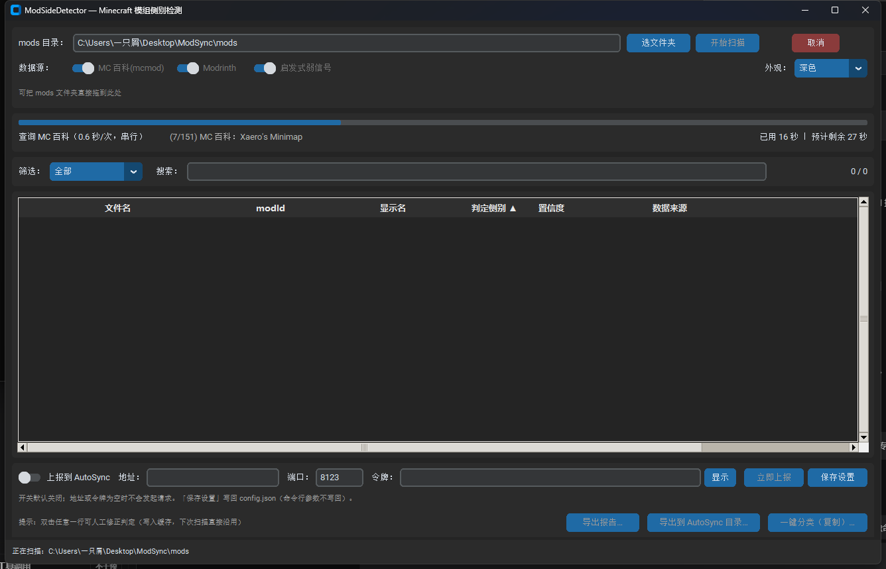

ModSideDetector
检测 Minecraft 模组运行侧别的桌面工具 —— 判断每个 mod 属于 纯客户端 / 纯服务端 / 双端，并导出报告供 AutoSync 直接消费。
装多了 → 玩家白下载几百 MB
装少了 → 直接崩游戏（Missing or unsupported mandatory dependencies）它解决什么问题
整合包作者手工分辨 mod 侧别极耗时且容易错。现有方案（Modrinth 的 client_side / server_side）由 mod 作者自己填，经常不准 —— 这正是本项目要改进的环节。
ModSideDetector 的做法是多源交叉：MC 百科（mcmod.cn）的「运行环境」字段 + Modrinth 的 side 字段 + jar 内静态特征，冲突时请人来定，判不了时保守放双端。
快速开始
图形界面（推荐）

上图是真实运行截图（151 个模组扫描后的结果表格）。
不想装 Python 的话，直接下载打包好的 Windows 版（解压后双击 ModSideDetector.exe）：
⬇ ModSideDetector-1.0.0-win64.zip —— 见 Releases
⚠️ PyInstaller 打的 exe 常被杀毒软件误报（打包器的通用现象，不是本程序的问题）。若被拦截， 请把整个解压目录加入白名单（不能只加 exe，它依赖同目录的
_internal\），详见下方「打包自己的 exe」。
从源码运行：
python -m src.main # 打开 GUI
python -m src.main --mods-dir "D:\mc\mods" # 打开并立即开始扫描src/main.py 支持的参数：
| 参数 | 说明 |
|---|---|
--mods-dir <目录> |
启动后直接开始扫描该目录 |
--version |
打印 ModSideDetector 1.0.0 后退出 |
--self-test |
自检：建窗口 → 渲染一帧 → 1.5 秒后自动销毁，成功退出码 0（给自动化用） |
--log-level DEBUG\|INFO\|WARNING\|ERROR |
日志级别，默认 INFO |
--config <路径> |
指定配置文件（默认 <程序目录>/config.json） |
界面功能：选文件夹 / 拖拽文件夹、扫描进度（进度条 + 当前文件名 + 已用时间与预计剩余）、
结果表格（按列排序、按侧别筛选、冲突与 unknown 高亮）、双击行人工改判（写入缓存）、
导出 side-report.json/.csv/.txt、导出到 AutoSync 目录、一键分类（只复制）、
上报到 AutoSync（勾选开关后扫描完自动上报；可即时改地址 / 端口 / 令牌并「立即上报」）、
底部状态栏（目录 / 各侧别计数 / 耗时 / 错误数）。
或者直接双击 dist\ModSideDetector\ModSideDetector.exe（免装 Python，见下方「打包」）。
界面上可以：选/拖入 mods 文件夹 → 看进度 → 结果表格按列排序、按侧别筛选 → 双击某行人工改判（结论写入缓存，下次扫描直接沿用）→ 导出报告 → 一键分类。
拖拽是软依赖：装了
tkinterdnd2就能把文件夹直接拖进窗口，没装（或tkdnd二进制加载失败）时界面只是显示一行提示并禁用拖拽，其余功能完全不受影响。 界面底部也会说明当前是否启用。
命令行
# 扫描并导出 side-report.json / .csv / .txt
python -m src scan "D:\mc\mods"
# 只跑 Modrinth（跳过 mcmod 抓取，快很多）
python -m src scan "D:\mc\mods" --no-mcmod
# 额外写一份给 AutoSync 读的文件
python -m src scan "D:\mc\mods" --for-autosync "D:\AutoSync\data"
# 扫描完直接把结果上报给 AutoSync（MSFP / 裸 TCP）
python -m src scan "D:\mc\mods" --report-to-autosync --autosync-host sync.example.com --autosync-token 你的令牌
# 人工确认某个 mod（写进缓存，永久生效）
python -m src review "D:\mc\mods" --name sodium.jar --side client --note "服主确认"
# 按报告一键分类（默认只复制，不移动原文件）
python -m src classify "D:\mc\mods" --out "D:\mc\server"
# 查看缓存统计 / 清理缓存
python -m src cache --show
python -m src cache --clear⚠️ 全局参数要放在子命令前面：
python -m src --verbose scan ...是对的，python -m src scan ... --verbose会报unrecognized arguments（argparse 的行为）。
scan 的常用开关：
| 开关 | 作用 |
|---|---|
--out-dir <目录> |
报告输出目录（默认与 mods 目录相同） |
--json-only |
只写 JSON，不写 CSV/TXT |
--for-autosync <目录> |
额外写一份 AutoSync 可读的 side-report.json |
--report-to-autosync |
扫描完成后把报告上报给 AutoSync（等价于临时打开 autosync_report_enabled） |
--autosync-host <地址> / --autosync-port <端口> / --autosync-token <令牌> |
临时覆盖上报连接设置（不写回 config.json） |
--upload-file <路径> |
不上报本次扫描结果，改为把指定文件（如 side-report.json）发给 AutoSync |
--limit N |
只扫描前 N 个 jar（冒烟测试用） |
--no-mcmod / --no-modrinth / --no-heuristics |
关闭对应数据源 |
--mcmod-scope missing |
加速：MC 百科只查 Modrinth 没给出结论的那些（约 1/5），151 个 mod 从 ~4.3 分钟降到 ~1 分钟；代价是放弃这部分的双源交叉验证 |
--offline |
完全离线（等价于关掉 mcmod + Modrinth） |
--refresh |
忽略缓存重新查询 |
--min-interval 1.0 |
调大 mcmod 抓取间隔（默认 0.6 秒） |
关于扫描速度：MC 百科必须串行限流 0.6 秒/请求（HANDOFF 红线，不能用并发去压对方服务器）， 所以首次全量扫描的耗时有下限。第二次扫描走缓存，几秒即可完成。 赶时间就用
--mcmod-scope missing，或在 GUI 里打开「mcmod 只补缺失（快）」。
判定结论怎么读
| 判定 | 含义 | 分发含义 |
|---|---|---|
纯客户端 |
只客户端装 | 只发给玩家 |
纯服务端 |
只服务端装 | 只放服务器 |
双端 |
两边都要 | 两边都装 |
不确定 |
判不了 | 按配置处理（默认当双端） |
| 置信度 | 含义 |
|---|---|
| 高 | 两源一致，或某源给出明确依据（如 client_side=unsupported） |
| 中 | 只有一个数据源有数据 |
| 低 | 两源冲突 / 无数据源 / 弱信号兜底 |
界面上要重点看两类行：冲突（两源结论相反）与 需人工确认。其余行扫一眼即可。
冲突时工具不做「谁更权威」的猜测，直接判双端并请你人工确认 —— 猜错的代价是崩游戏。唯一例外：mcmod 明写「服务端无效 / 客户端无效」（明确依据）而 Modrinth 只有弱依据时，采信 mcmod，但置信度压到低并要求复核。
详细的规则、权重与实测坑见 docs/判定策略.md。
数据源与实测覆盖率
在真实数据（151 个 NeoForge 1.21.1 模组，817 MB）上的实测：
| 数据源 | 覆盖率 | 说明 |
|---|---|---|
| mcmod「运行环境」 | 见下方准确率章节 | 语义最清晰，质量最高，需限流抓取 |
| Modrinth | 120/151 = 79.5% | 官方批量 API，快；但字段由作者自填，常不准 |
jar 元数据（clientSideOnly / Fabric environment） |
约 6% | 作者显式声明，可信但覆盖率低 |
mixin / data/ 等启发式 |
100% | 只作提示，绝不单独定案 |
| 人工复核 | 100% | 一次性确认，写进缓存永久生效 |
刻意不做的事：不扫字节码。HANDOFF.md 实测字节码扫描准确率仅约 55%（Axiom、Flashback、Xaero 小地图 全被误判）。
验收实测
| 项目 | 实测结果 |
|---|---|
| 人工确认基准集准确率 | 70 / 70 = 100%（样本集 tests/known_sides.json：69 个条目、70 次匹配） |
| 误判为纯服务端的数量 | 0 —— 铁律，由两个测试守着 |
| 全量 151 个 mod 判定分布 | 纯客户端 30 / 双端 117 / 纯服务端 4 / 不确定 0 |
| 判为纯服务端的 4 个 | BetterTab、CBC Peripheral、MiniMOTD、ServerCore（依据均为 client_side=unsupported，逐个核对成立） |
| Modrinth 命中率 | 120 / 151 = 79.5% |
| 首次全量耗时（含 mcmod） | 约 4.3 分钟 —— 受串行限流 0.6 秒/请求的硬下限约束；--mcmod-scope missing 约 1 分钟 |
| 第二次扫描 | 0.1 秒，报告内 本次网络请求：0 次 |
| 单元测试 | 65 个用例全绿（含准确率基准与铁律断言） |
复现方式：
python -m src scan "D:\mc\mods" --out-dir out
python -m unittest tests.test_accuracy -v与 AutoSync 联动
ModSideDetector scan → side-report.json → AutoSync 的 classify 优先读它
→ 读不到才回退查 Modrinthside-report.json 的格式严格按 HANDOFF.md 4.2 节的约定（generated / tool / mods[]，每条含 file / sha1 / sha256 / mod_id / display_name / side / confidence / sources / notes）。
生成方式：
python -m src scan "D:\mc\mods" --for-autosync "D:\AutoSync\data"一键分类的输出目录名也与 AutoSync 的 classify 语义一致：
<输出目录>/
├── client-mods/ 纯客户端（只发给玩家）
├── server-mods/ 纯服务端（只放服务器）
└── both-mods/ 双端 + 不确定（两边都要）一键分类默认是「复制」不是「移动」，且目标同名文件内容不同时绝不覆盖（只记冲突）。 源文件永远不动 —— 删错了没法恢复，复制错了只是浪费磁盘。
方式 B：网络上报（MSFP / 裸 TCP）
除了写文件，还可以在扫描完成后把同一份 side-report.json 内容直接经 TCP 发给 AutoSync，
由对方接收并存库。这条路走 MSFP 协议（裸 TCP，默认端口 8123，经 frp 映射到公网），
不是 HTTP —— AutoSync 跑在阿里云大陆节点，备案拦截系统会拦 HTTP 流量，裸 TCP 不受影响。
默认关闭（autosync_report_enabled: false），不强制使用；不打开时程序不会发起任何连接。
{
"autosync_report_enabled": false, // 开关，默认关
"autosync_host": "", // AutoSync 地址（域名或 IP）
"autosync_port": 8123, // 端口
"autosync_token": "", // 共享令牌（单行、不含空格）
"autosync_timeout": 30.0 // 连接 / 读写超时（秒）
}命令行（这些开关只对本次运行生效，绝不写回 config.json）：
# 扫描完上报，连接参数临时覆盖
python -m src scan "D:\mc\mods" --report-to-autosync --autosync-host sync.example.com --autosync-port 8123 --autosync-token 你的令牌
# 只把磁盘上已有的报告发出去（不重新扫描）
python -m src scan "D:\mc\mods" --upload-file "D:\mc\mods\side-report.json" --autosync-host sync.example.com --autosync-token 你的令牌成功会打印对方返回的条目数（[ok] 上报成功：对方返回 151 条），失败会打印原因
（令牌不对 / 对方未启用 / 超时 / 连不上 …）。上报失败不会影响扫描结果，也不会改变 scan 的退出码。
图形界面：底部操作区有一行「上报到 AutoSync」设置条 —— 开关、地址、端口、
令牌（默认 * 遮罩，旁边的「显示 / 隐藏」按钮可临时看明文）、「立即上报」、「保存设置」。
「保存设置」写回 config.json；开关打开后，每次扫描完成都会自动上报（在后台线程里跑，不阻塞界面）。
协议一句话：连上后发 REPORT <token> <length>\n + <length> 字节的 UTF-8 JSON（side-report.json 全文，
长度按字节算），对方回一行 OK <count> / ERR unauthorized / ERR disabled / ERR too large /
ERR bad request / ERR internal <detail>。实现见 src/upload.py。
打包自己的 exe
powershell -ExecutionPolicy Bypass -File build.ps1
# 产物：dist\ModSideDetector\ModSideDetector.exe脚本采用 --onedir（不是 --onefile）+ --windowed，并排除 matplotlib/numpy/PyQt 等无关大件。
⚠️ 杀毒软件误报：PyInstaller 打包的 exe 经常被杀毒软件误报，这不是本程序的问题，是打包器的通用现象。缓解办法： 1. 用
--onedir（本脚本的默认，误报率明显低于--onefile）； 2. 把dist\ModSideDetector\整个目录加入杀软白名单（不要只加 exe，它依赖同目录的_internal\）； 3. 从源码自己跑（python -m src.main），完全绕开打包器； 4. 对 exe 做代码签名（需购买证书，成本较高）。
打包产物里没有什么
- 不含
cache/—— 里面是 mcmod.cn 抓来的内容，许可为 BY-NC-SA 3.0，禁止随产物分发； - 不含
config.json—— 里面有本机路径、代理等私人配置；程序首次运行会在 exe 所在目录自动生成。
配置文件
配置优先级：--config <路径> > <程序目录>/config.json > 默认值。
首次运行会自动生成 config.json（GUI 会记住上次扫描的目录）。字段说明见 config.example.json，常用项：
| 字段 | 默认 | 说明 |
|---|---|---|
mods_dir |
"" |
上次扫描的目录（自动记忆） |
output_dir |
"" |
报告输出目录，空 = mods 目录 |
cache_dir |
"" |
缓存目录，空 = <程序目录>/cache |
use_mcmod / use_modrinth / use_heuristics |
true |
数据源开关 |
mcmod_scope |
"all" |
MC 百科查询范围：all 每个都查；missing 只补 Modrinth 没结论的（快，牺牲部分交叉验证） |
mcmod_min_interval |
0.6 |
mcmod 抓取间隔（秒），调小会被对方限流 |
cache_ttl_hours |
720 |
缓存有效期，<=0 表示永不过期 |
unknown_as |
"both" |
判不了时怎么办。只接受 both / unknown，写成 server 会被强制纠正 |
proxy |
"" |
形如 http://127.0.0.1:7890 |
autosync_report_enabled |
false |
扫描完自动上报给 AutoSync（默认关） |
autosync_host / autosync_port / autosync_token |
"" / 8123 / "" |
AutoSync 地址、MSFP 端口与共享令牌 |
缓存与许可证（红线）
- 缓存写在
cache/side-cache.json，包含 jar 哈希、Modrinth 查询结果、mcmod「运行环境」原文、以及人工复核结论； - mcmod 的内容是 BY-NC-SA 3.0：禁止商业使用、转载需署名。本地缓存自己用没问题，不要把缓存打包进分发的产物（
.gitignore与build.ps1都已排除）； - mcmod 抓取串行限流 0.6 秒/请求，不要并发 —— 尊重对方服务器，这也是
HANDOFF.md明确列出的红线。
目录结构
ModSideDetector/
├── README.md 本文件
├── PROMPT.md 原始需求书
├── HANDOFF.md 技术交接文档（实测结论 + 红线，勿删）
├── docs/
│ └── 判定策略.md 判定规则、置信度语义、开发阶段新发现的坑
├── config.example.json 配置示例
├── requirements.txt
├── build.ps1 PyInstaller 打包脚本
├── src/
│ ├── main.py GUI 入口
│ ├── cli.py 命令行入口（python -m src）
│ ├── detector.py 核心编排 + 多源融合
│ ├── jarinfo.py jar 元数据解析（TOML / Fabric / JiJ 递归 / 哈希）
│ ├── cache.py 本地缓存（含人工复核结论）
│ ├── report.py 导出 JSON / CSV / TXT + 一键分类
│ ├── net.py urllib 封装（重试 / 代理 / 限流）
│ ├── verdict.py 判定结果枚举
│ ├── config.py, paths.py
│ ├── sources/
│ │ ├── mcmod.py MC 百科（限流 + 多策略搜索 + 标题校验）
│ │ ├── modrinth.py Modrinth 批量 API
│ │ └── heuristics.py jar 内弱信号
│ └── ui/app.py CustomTkinter 界面
└── tests/ 单元测试 + 人工确认基准集开发与测试
python -m pip install -r requirements.txt
# 单元测试（不需要网络）
python -m unittest discover -s tests -v
# 准确率基准测试（需要先生成报告）
python -m src scan "D:\mc\mods" --out-dir out
python -m unittest tests.test_accuracy -v要求 Python 3.11+。运行期只用标准库 + customtkinter，网络层是标准库 urllib（不依赖 requests）。
已知限制
- Modrinth 字段由作者自填，可能整条都是错的；工具会在两源冲突时高亮，但最终仍需要人工过一遍冲突项与「需人工确认」项 —— 这是达到 100% 准确的唯一路径；
- 某些 mod 在任何数据源上都查不到（例如作者没发布到 Modrinth、mcmod 也没收录），此时只能保守判双端；
- mcmod 新收录条目可能没有「运行环境」字段：这是「字段缺失」，不等于「无侧别信息」，工具会退回其它数据源；
- 首次全量扫描需要抓 mcmod，耗时与 mod 数量成正比（限流 0.6 秒/请求，151 个 mod 约 2–3 分钟）；第二次扫描走缓存，几秒完成；
- exe 没有自带控制台：
ModSideDetector.exe --version/--self-test会先尝试写 fd 1（输出被重定向到管道/文件时有效），失败再附着父控制台，并把控制台代码页临时切到 65001（退出时还原）。在极少数终端组合下这行文字仍可能看不到 —— 但退出码始终可信（--self-test成功即 0）； - 拖拽依赖
tkinterdnd2：未安装或tkdnd二进制加载失败时，界面上会显示提示并禁用拖拽，其它功能不受影响（软依赖，不阻塞启动）。
红线（摘自 HANDOFF.md，务必遵守）
- ❌ 不要把 mcmod 抓来的数据打包进分发的产物（BY-NC-SA 3.0）
- ❌ 不要并发狂抓 mcmod（限流 0.6 秒/请求）
- ❌ 不要用字节码扫描做主判据（实测准确率仅约 55%）
- ❌ 不要把「不确定」判成
server（代价是客户端缺 mod 崩游戏） - ❌ 不要重写 AutoSync 已有的 TOML / JiJ 解析
许可证
本项目管理器代码采用 MIT（见 LICENSE）。 注意：mcmod.cn 的内容为 BY-NC-SA 3.0，与本项目的 MIT 许可无关，不要混淆。
在线文档
文档站（深色科技风、纯静态、无任何外部 CDN 依赖，离线也能打开）：
https://szkele1145.github.io/ModSideDetector/
| 页面 | 内容 | 内容来源 |
|---|---|---|
| 首页 | 项目定位、核心特性、判定结论与数据源一览 | 手写（由生成器输出） |
| 使用指南 | 本 README 的网页版 | README.md |
| 判定策略 | 判定枚举、数据源权重、融合规则与新踩的坑 | docs/判定策略.md |
| 技术交接 | 全部实测结论、可复用片段与红线 | HANDOFF.md |
| 原始需求书 | 最初的开发提示词与验收标准 | PROMPT.md |
站点由 python tools/build_site.py 生成（--check 只校验不写文件），产物为 docs/*.html + docs/assets/，随 main 分支的 /docs 目录发布。
⚠️
docs/判定策略.md是文档源文件，必须保留 —— 不要因为它生成了strategy.html就把它删掉。
制作
本项目由 DeepSeek-V4.1-Flash 制作。
发布方式（GitHub Pages 手动配置，不使用 Actions）见 docs/README-PAGES.md。